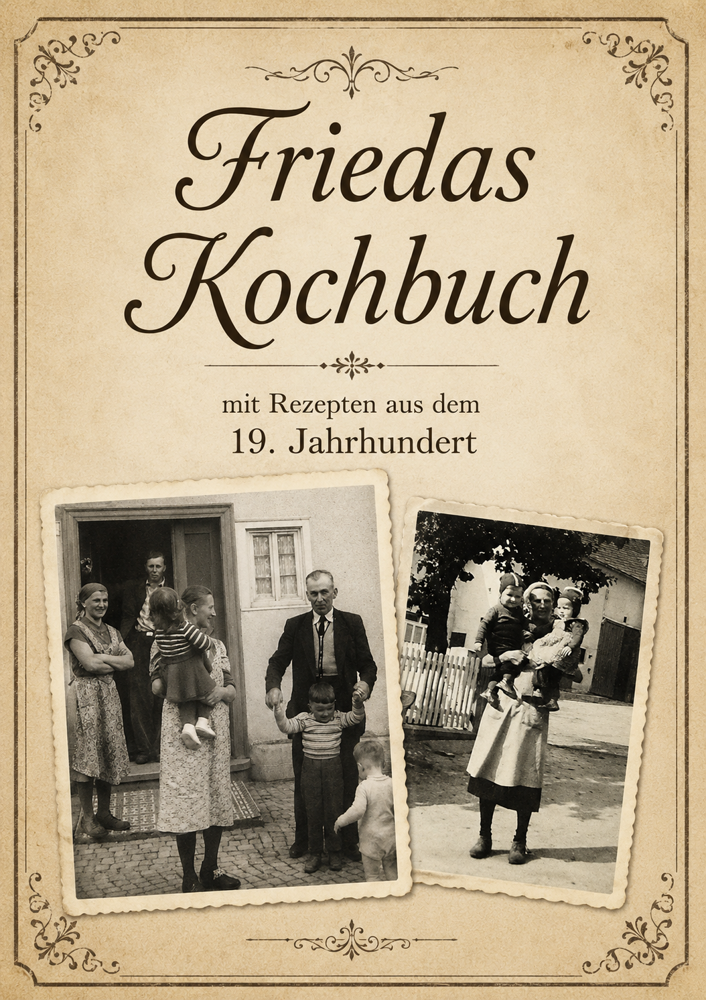

Historische FamilienrezepteFriedas Kochbuch
Diese Sammlung bewahrt überlieferte Familienrezepte aus dem 19. Jahrhundert und macht sie für heutige Leserinnen und Leser wieder zugänglich.
23 überlieferte Rezepttitel aus dem 19. Jahrhundert. Jede Seite ist dauerhaft verlinkt und für Originaltext, moderne Übertragung und heutige Mengenangaben vorbereitet.
Gebundene Suppe
Eigene Rezeptseite öffnen
Historisches Rezept · Nr. 02Kartoffelsuppe
Eigene Rezeptseite öffnen
Historisches Rezept · Nr. 03Weinsuppe
Eigene Rezeptseite öffnen
Historisches Rezept · Nr. 04Eierbier / Warmbiersuppe
Eigene Rezeptseite öffnen
Historisches Rezept · Nr. 05Gebundene Reissuppe
Eigene Rezeptseite öffnen
Historisches Rezept · Nr. 06Rindfleischsuppe mit Graupen
Eigene Rezeptseite öffnen
Historisches Rezept · Nr. 07Hühnersuppe
Eigene Rezeptseite öffnen
Historisches Rezept · Nr. 08Reissuppe
Eigene Rezeptseite öffnen
Historisches Rezept · Nr. 09Haferflockensuppe
Eigene Rezeptseite öffnen
Historisches Rezept · Nr. 10Einlaufsuppe
Eigene Rezeptseite öffnen
Historisches Rezept · Nr. 11Erbsensuppe mit Pökelfleisch
Eigene Rezeptseite öffnen
Historisches Rezept · Nr. 12Gemüsesuppe
Eigene Rezeptseite öffnen
Historisches Rezept · Nr. 13Buttermilchsuppe
Eigene Rezeptseite öffnen
Historisches Rezept · Nr. 14Apfelbrotsuppe
Eigene Rezeptseite öffnen
Historisches Rezept · Nr. 15Flädlesuppe
Eigene Rezeptseite öffnen
Historisches Rezept · Nr. 16Kartoffelsuppe von gekochten Kartoffeln
Eigene Rezeptseite öffnen
Historisches Rezept · Nr. 17Bohnensuppe ohne Fleisch
Eigene Rezeptseite öffnen
Historisches Rezept · Nr. 18Klöße aus gekochten Kartoffeln
Eigene Rezeptseite öffnen
Historisches Rezept · Nr. 19Klöße aus rohen Kartoffeln
Eigene Rezeptseite öffnen
Historisches Rezept · Nr. 20Kartoffelpuffer
Eigene Rezeptseite öffnen
Historisches Rezept · Nr. 21Karthäuser Klöße
Eigene Rezeptseite öffnen
Historisches Rezept · Nr. 22Weckschnitte
Eigene Rezeptseite öffnen
Historisches Rezept · Nr. 23Grießklöße
Eigene Rezeptseite öffnen